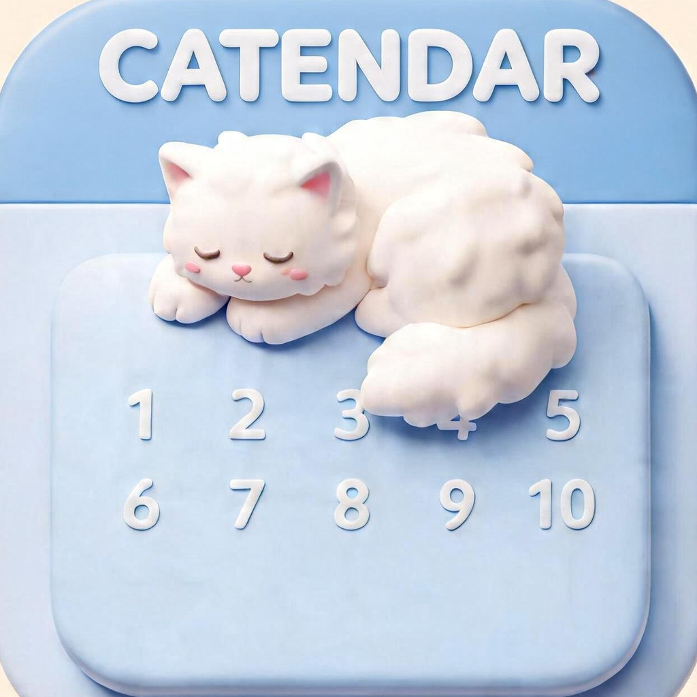
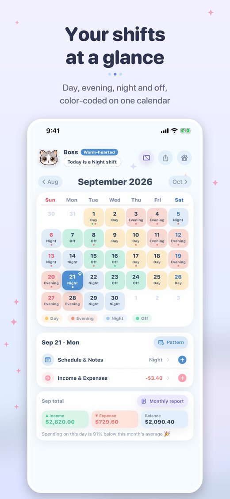
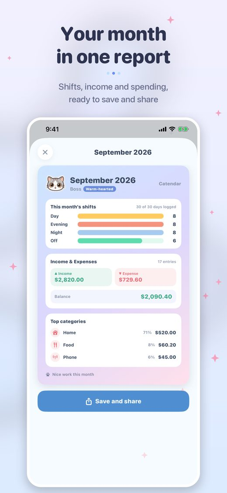
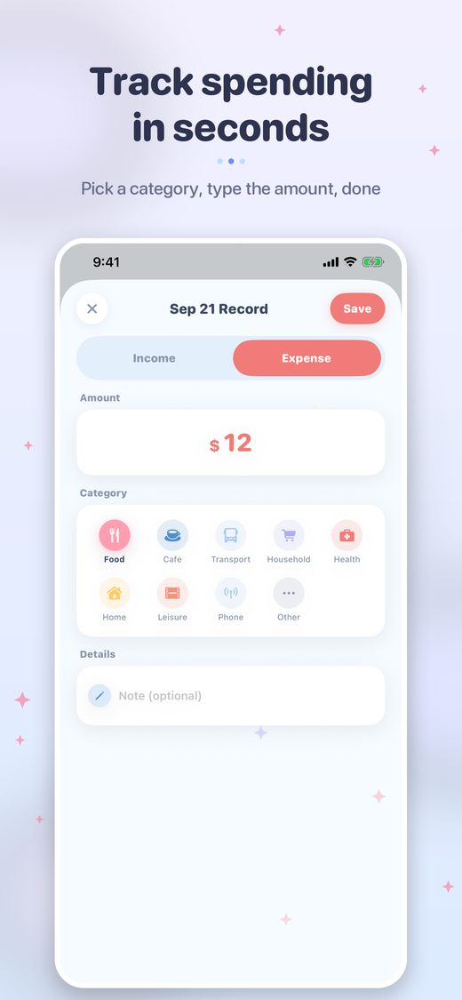

A shift calendar and money diary, with a cat
Get it on the App Store


Day, evening, night and off, color-coded on one calendar
Shifts, income and spending, ready to save and share
Pick a category, type the amount, done
Free, with ads. No account needed.